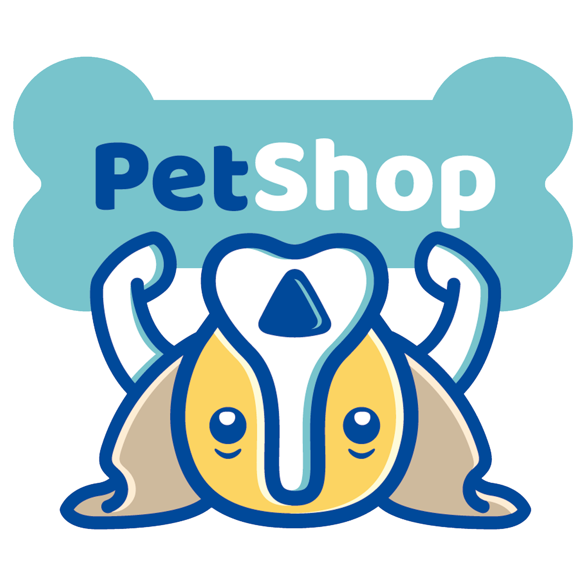
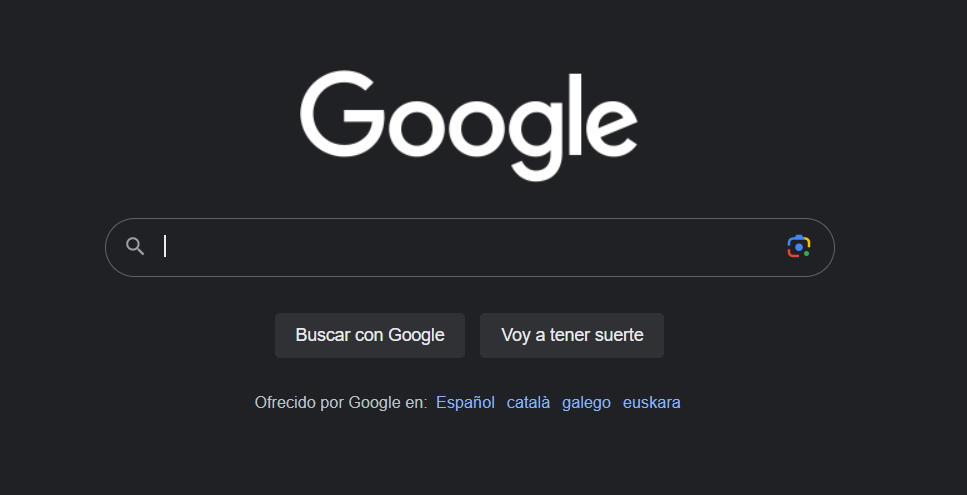
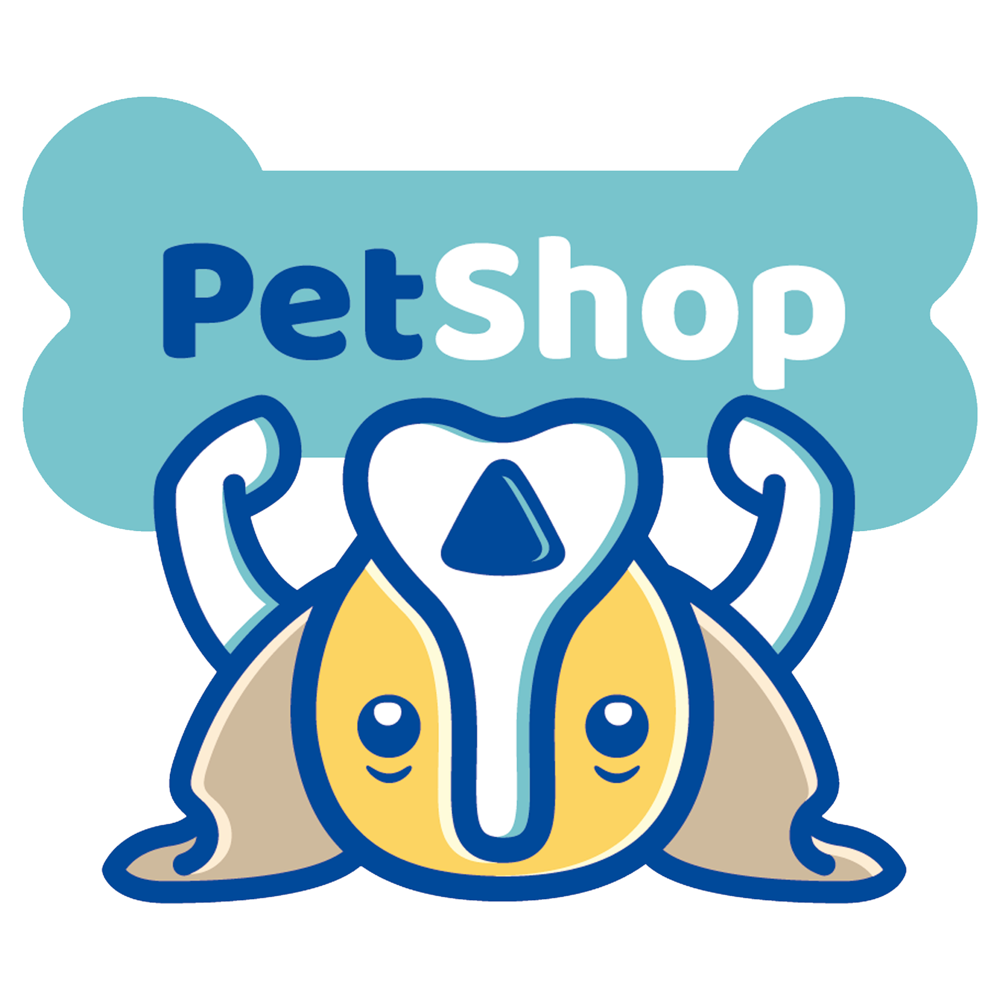
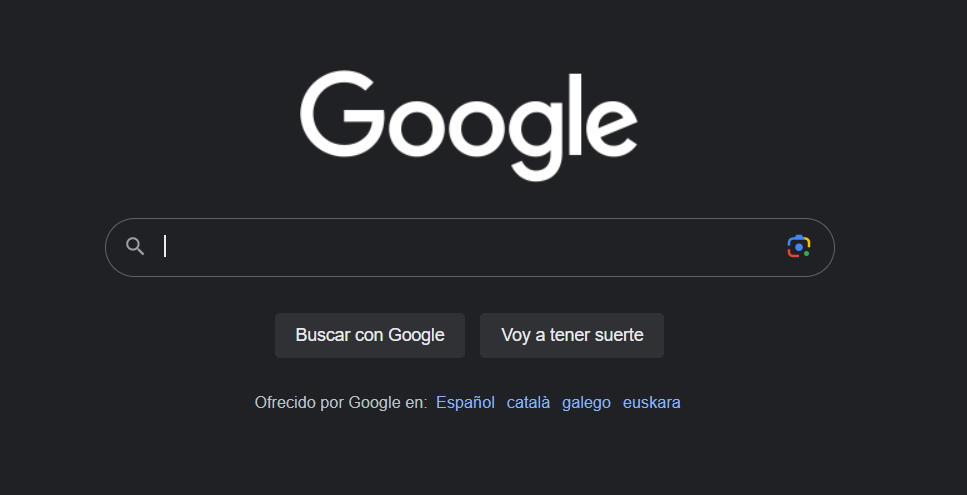

Estudiante
Santiago
Daza
Estudiante Desarrollo de Aplicaciones Web
Universidad europea de madrid
Mas sobre mi
Estudiante Desarrollo de Aplicaciones Web
Universidad europea de madrid
Mas sobre mi
¡Hola! Soy Santiago Daza, un estudiante entusiasta de Desarrollo de Aplicaciones Web (DAW) en la Universidad Europea. Mi objetivo es convertirme en un profesional altamente competente y capaz de construir sitios web y aplicaciones que marquen la diferencia. Soy un espíritu curioso y creativo, siempre buscando nuevas formas de innovar y mejorar la usabilidad y funcionalidad de mis proyectos. Mi pasión por el desarrollo web se combina con mi habilidad para trabajar en equipo, lo que me permite colaborar eficientemente en proyectos multidisciplinarios. Estoy emocionado por enfrentar nuevos desafíos y llevar mis habilidades de desarrollo web al siguiente nivel. Si estás buscando un desarrollador web comprometido y con una mentalidad orientada a resultados, ¡estaré encantado de ser parte de tu equipo!


 



Aplicacion en java con la funcionalidad de consultar, filtrar y dar de alta proyectos integradores
Pagina oficial para la internacionalmente famosa Tienda de animales Petshop
©Web Personal creada para la materia de Lenguaje de Marcas
del CFGS DAW